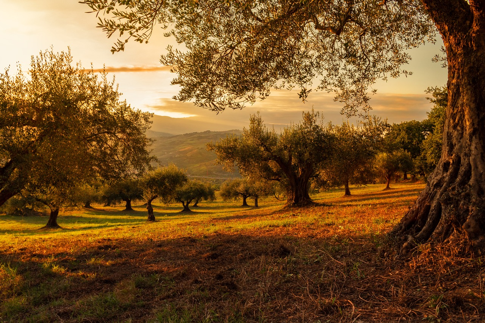
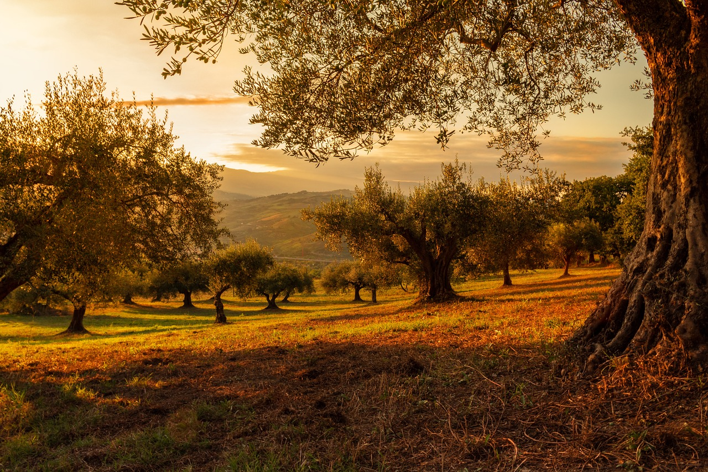

Ukázka mé umělecké práce
 

O mě
Fotím přírodu, protože mě fascinuje její nekonečná krása a rozmanitost. Každý okamžik v přírodě je jedinečný a neopakovatelný, a právě tyto chvíle se snažím zachytit svým objektivem. Fotografie mi umožňuje sdílet tyto kouzelné momenty s ostatními a přinášet jim radost a inspiraci. Příroda je pro mě nekonečným zdrojem klidu a inspirace, a doufám, že mé fotografie vám přinesou stejný pocit.
Kromě toho nabízím své fotografie k prodeji a poskytují fotografické služby na zakázku. Specializuji se na portréty, fotografie interiérů a také na fotografie pro průkazy. Pokud máte zájem o mé fotografie nebo potřebujete profesionálního fotografa pro váš projekt, neváhejte mě kontaktovat. Rád vám pomohu zachytit ty nejkrásnější okamžiky.
Pro registrované uživatele na mém webu nabízím speciální slevy a také kurzy focení, kde se můžete naučit, jak zachytit krásu přírody svým vlastním objektivem. Připojte se k naší komunitě a objevte svět fotografie s námi!